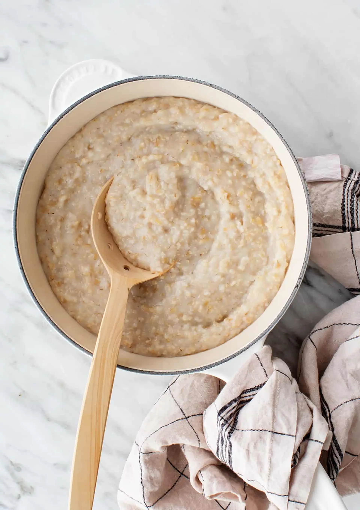

Porridge
Home

A simple recipe to making porridge from scratch in under 5 minutes!
Ingredients
- 40g Oats
- 200ml Milk
- 2 Teapsoons Sugar
Steps
- Add oats and milk to a bowl and mix well.
- Microwave for 1 min then remove and stir well.
- Continue to microwaves for 30 second intervals then removing and stiring until desired thickness has been reached.
- Finally, stir in the sugar.